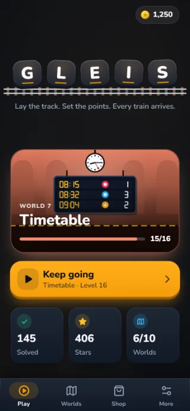
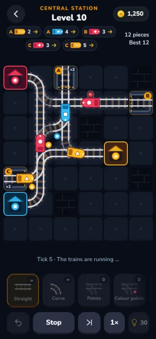
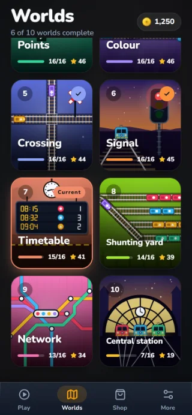
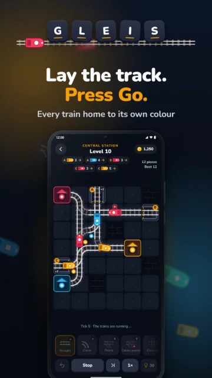
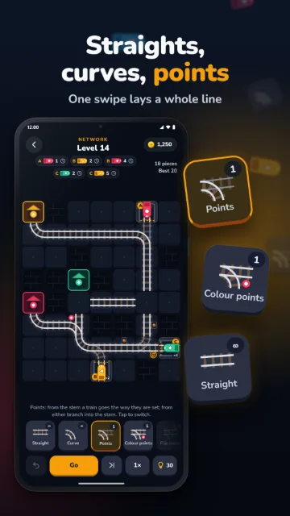
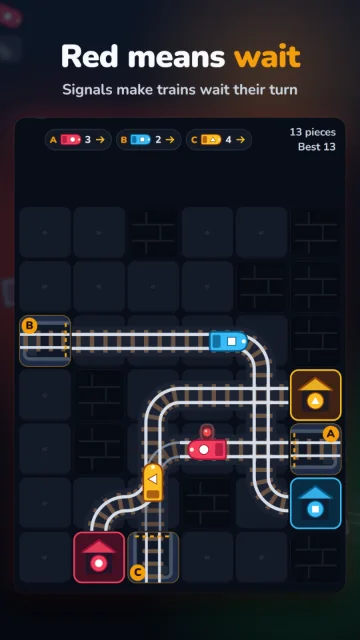
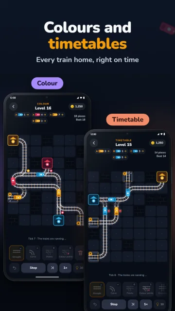
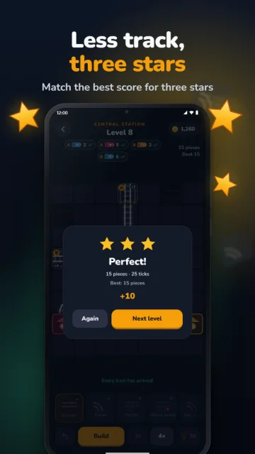
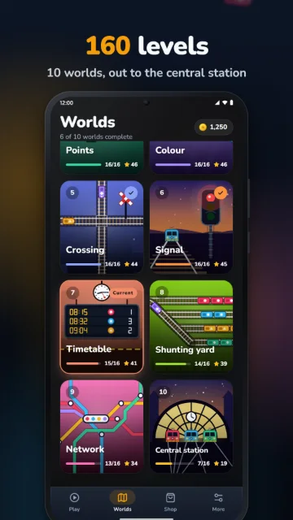
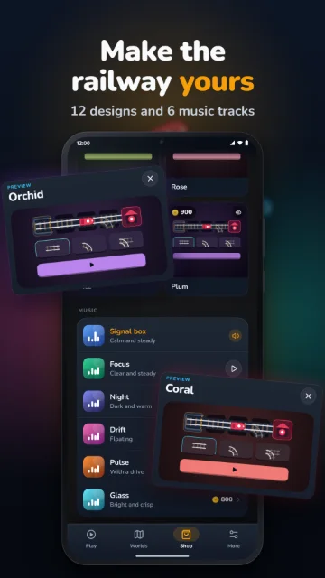

Railway puzzle
GLEIS
“Lay the track. Set the points. Every train arrives.”
Depots stand at the edge with their timetables, stations wait on the board in the trains’ colours. In between you lay the line: straights, curves, points and signals. Then you press Go, and all the trains run at once, tick by tick. Each one has to reach the station of its colour without derailing and without a crash.
- Coming to Google Play
- Coming to the App Store



Screenshots from the current version of GLEIS
Video
GLEIS in motion
How it works
Lay, set, go
-
Lay the track
Pick a piece on the workbench and tap the board, or drag a finger to lay a whole line from the depot to the station.
-
Set the points
A tap turns a piece or switches points. Colour points send trains by their colour, signals make them wait.
-
Press Go
All trains run their timetable, tick by tick. If every one reaches its station, on little track, you get three stars.
Pictures
A look inside
Swipe or scroll for more.







Pictures from the store listing of GLEIS, taken in the current version
At a glance
GLEIS in numbers
- 10Worlds
- 160Levels
- 7Pieces of track
- 0Time pressure
- Ten worlds, from the first track through points, crossings and signals to the central station with up to six trains.
- Seven pieces of track: straight, curve, crossing, points, colour points, flip points and signal.
- One swipe of a finger lays a whole line; the curves appear by themselves.
- One best score per level, checked by a solver: use as little track as possible for three stars.
- No luck, no time pressure: the trains only run when you press Go, and exactly the same way every time.
Worlds
10 worlds of 16 levels each
- TrackFrom A to B
- CurveRound the bend
- PointsLeft or right
- ColourEach train its station
- CrossingStraight across
- SignalStop and go
- TimetableAll in good time
- Shunting yardSorting
- NetworkMany lines
- Central stationThe big junction
More from Riddlewerk